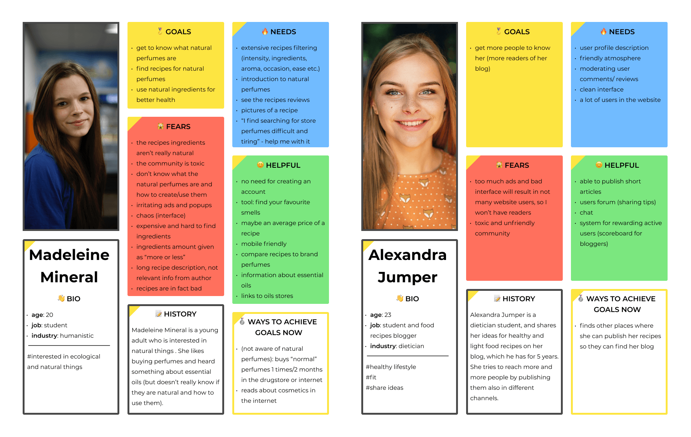
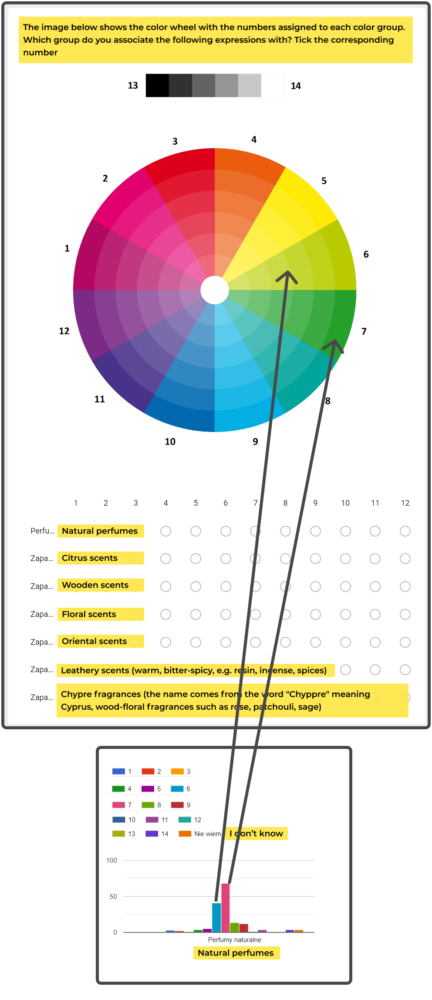
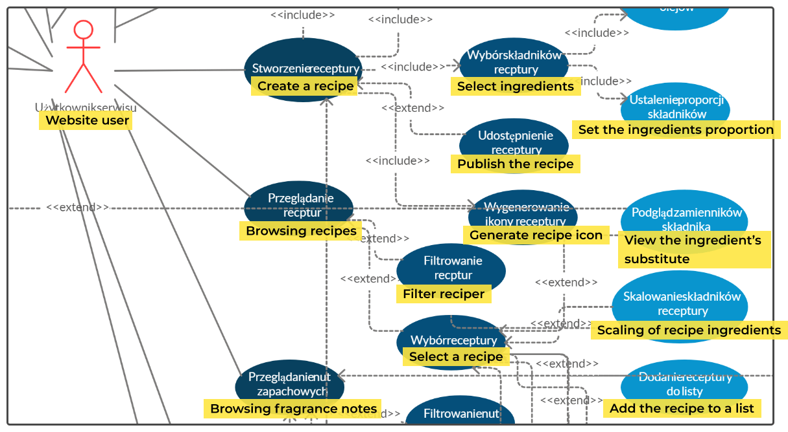
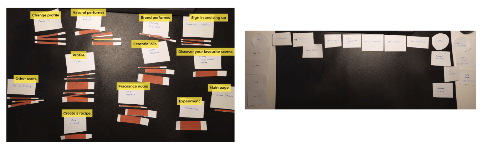
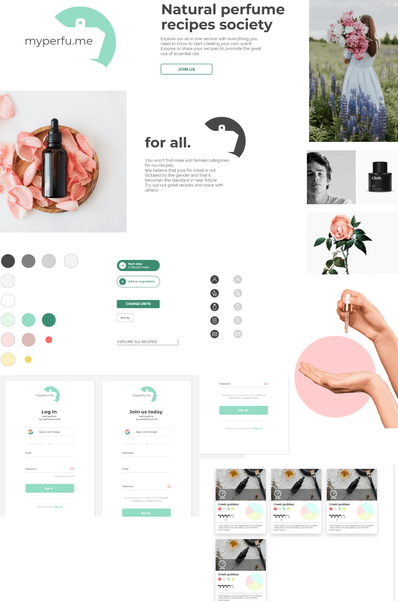
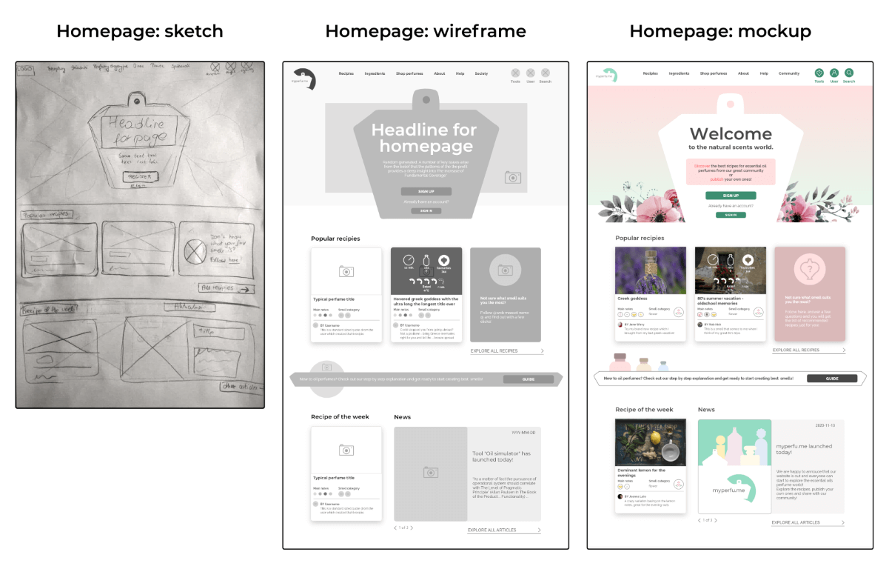

Intro
MYPERFU.ME
"Explore recipes for natural essential oils perfumes and do them yourself!"
Introduction
Many of us use perfumes on a daily basis, but don't really know what is inside of them or can't even find their perfect one. Did you know that you can create them with natural essential oils? We wanted to create a website which brings together perfume enthusiasts so they can share their recipes!
Summary
Project summary:
app: myperfu.me
üéØ goal: app implementation:
- the first natural perfumes recipes place where everybode can explore and share them, so you can do them on your own
üíª type: website app
üòé my role: UX designer, product owner
üí™ team size: 3 people (me and 2 developers)
üìÖ when: II 2020 - XII 2020
⚙ project: Engineer's Thesis
✅ outcome (as for 10.12.2020): early version of our app was ready
Process outline
This case study covers:
Research
Ideation
Design
Iterative UX & dev
Project results
Research
Context
üéØ goal: introduction
One time I wanted to buy myself a new perfume üç∂. Although I use them everyday, most of the time I got them as presents, so I never really got a chance to find my favourite smell. My current ones were "ok", but at that time I wasn't even aware what they really smelled of (what ingredients created this smell).
I realized, that searching for the right perfume in a store could be a nightmare:
üî• bad categorization: In stores, perfumes are grouped by a brand and there is no categorization of how they smell: if you don't care about brand and what to find a certain smell, it is very hard
üî• no knowledge: I realized I didn't even know if I like floral or woody scents more. Or if there are more types of them? I only knew I enjoyed certain perfumes, e.g. Burberry London for Men. If they were categorized by smell, I could go and test a few ones and learn it.
It motivated me to dig into perfumes domain.

Field study
Perfumes domain
üéØ goal: Understand perfumes: how the smell is created?
This section serves as a quick wiki to understand perfumes and scents (it is also useful in everyday life, so enjoy!):
üç∂ Each perfume has its own fragrance (composition): it defines the smell of a perfume
üëÉ Each fragrance (composition) consists of multiple scent notes
üå∫ A scent note is a specific, atomic scent, such as lavender or bergamot. We can categorize scent notes in a few ways:
Intensity and durability: This is the most common and gives the most information. There are 3 groups:
Top/ Head üòä notes: the most fleeting but the most intense e.g. lemon
Middle/ Heart ❤️ notes: moderately durable and intense e.g. jasmine
Base notes: long lasting but the least intense e.g. patcholi
Because of this, perfume's scent changes over time! Right after perfume application you may feel e.g. lemon the most, but later it will disappear and other scents (middle and base) will become more noticeable
Scent groups: These are groups which represent the scent notes family, e.g. citrus üçã (lemon, lime, orange) or floral üå∫ (lavender, geranium). There is no standard - different sites provide different categorization.
Synthethic/natural origin: Although most of the perfumes contain only synthethic scent notes (because e.g. it is cheaper) there are:
üçÉ natural: the ones which have a corresponding essential oil, i.e. the essence is found in nature, e.g. lemon üçã, lavender. They are sold as essential oils.
üß™ synthethic: the ones which are only synthethic e.g. leather üíº, watermelon üçâ. They are sold as fragrance oils.
Sounds complex? Check out the a visual summary:
Some online stores provide information about scent notes or groups, and some don't. You can find it e.g. in Notine store and learn that "Burberry London for Men" has i.a. bergamot scent note üå∫, which is a top/head note:

Link: Burberry London for Men Eau de Toilette for Men | notino.co.uk
Natural perfumes
Then, I found out that there are recipes made by eco-enthusiasts for natural perfumes. You need only a few ingredients:
essential oils: the natural essence representing a scent note, i.e. plant extract, e.g. lemon essential oil üçã. This is obtained by steaming or pressing plant parts. Attention!: there are often fragrance oils sold in stores. These are synthethic ones!
base oil: it is an unscented oil used for dilution, e.g. almond or ü•• coconut oil.
To create a natural perfume you just mix the above in given proportions.
Problem hypothesis
üéØ goal: What is the problem?
Observations and motivations:
a general society trend towards becoming more eco-friendly üå±
although there are single blog articles about natural cosmetics or recipes for making them, there is no tool üíª which combines them and enables people to share them or view standarized recipes.
When forming an engeneering thesis team on the university, one of my friends was interested in essential oils üß™. We decided to pursue this topic and investigate natural perfumes website and its potential.
Hypothesis:
There is no place in which a person can find recipes for natural perfumes in a standarized form.
Thus, our initial idea was to provide a website application which:
✅ enables people to view recipes for natural perfumes
✅ enables more experienced people, e.g. bloggers, to share their recipes
✅ educates people in terms of scents, so they could discover their favourite ones and tell which certain scents they like
More field study: existing research on perfumes
üéØ goal: Understand the general attitude towards perfumes in public, so to know if our idea has potential
Top highlights: üí°
Women buy and use perfumes more than men (1)(2)
women üë©: buy 1 perfume/month, 41% use it everyday
men üë®üèª: buy 1-2/year, 23% of men use them "always"
There are many factors in choosing a perfume, e.g.: (2)(3)
üòç whether the scent pleases the partner
üïí durability and versatility (so it can be used on every occasion)
üí≤ low price
Interesting fact: gender-free perfumes üÜì (as the division is artificial and cost-effective just for the brands) (5)
Potential for DIY: 93% of Poles cook in home, 40% everyday (as there is no reserach on DIY perfumes it could show the potential in it) (4)
Translating the findings on our app: üíª
the main user: women üë©
a lot of different criterias when filtering the recipes
possibly educational role, e.g. scent theory, gender-free perfumes
What are we missing? ❓
Are people aware what scents they like?
Are they intereseted in natural perfumes?
SWOT competetive analysis
üéØ goal: Identify our competition and find elements which we could reuse or improve
⚙️ tools: Figma
As there is no website which enables users to read and share recipes for natural perfumes, the analyzed ones where similar in terms of functionality (landscape).
Summary of my two analysis:
PERFUMIST Perfumes Advisor: PERFUMIST Perfumes Advisor – Aplikacje w Google Play


przepisy.pl: Przepisy.pl - Przepisy kulinarne - Twoja baza przepisów

There were also two others that were analyzed:
-
- description: "organic beauty community" - a blog run by a DIY cosmetics creator
fragnatica.com: Perfumes and Colognes Magazine, Perfume Reviews and Online Community—Fragrantica.com
- description: an encyclopedia of perfumes: their composisiton, rating, reviews etc.
Interviews
üéØ goal: Identify the attitude towards perfumes and essential oils
⚙️ tools: OBS studio
Overall we conducted 5 semi-structured interviews (+1, a test to verify if the interview plan is correct), of which 3 were done by me. First, I identified initial personas and based on it we had following participants:
üë© 3 potential users in different age
üë©‚Äçüíª 1 potential user, a blogger (food recipes)
Additionally we had 1 interview with a domain expert, to better know the essential oils
- üë©‚Äç‚öïÔ∏è 1 domain expert, technologist working with cosmetics
All of them were done remotely, because of COVID-19 pandemic, and were recorded to further analyse responses.
Personas
Because of the milestones required by our university, I needed to create them before conducting the interviews (they helped us identify the interview participants). Finally, taking interviews into consideration (and futher survey), I prepared 2 personas:
üë© Interested recipes reader: Madeleine Mineral
üë©‚Äçüíª Professional blogger publishing the recipes: Alexandra Jumper

Survey
üéØ goal: Better understand the attitude to perfumes, natural perfumes
⚙️ tools: Google Forms
After interviews we knew what questions we wanted to ask in order to validate some responses with a bigger amount of people.
Survey characteristics:
✅ Number of questions: 32 (24 closed, 8 open)
üìù Survey pretest: 4 days, 16 people filled it and sent us feedback
✳ Some closed questions were mandatory
üáµüá± Made in polish language
Goals:
üõçÔ∏è Identify the process of purchasing perfumes
ü§î Identify the attitude towards perfumes and nutural ones
Participants:
members of natural cosmetics groups on facebook
forums with people interested in natural cosmetics or just normal ones
our university students
Survey response:
⏳ duration: 50 days
ü뮂Äçüë©‚Äçü붂Äçüë¶ number of responses: 162
Example questions and results:
Because the survey was long, I wanted to make it a little more interesting: there was a question about color associations, which responses helped to build the website color palette - I got feedback that it was a great and interesting question!
Ideation
Business user scenarios
üéØ goal: Identify less obvious requirements
Based on the created personas, user scenarios were prepared - a description of their typical day ‚òÄÔ∏èüåò when the created system is available in their lifes. This helps to identify requirements.
I prepared the one for Madeleine Mineral - a normal content consumer:
Use case diagram
üéØ goal: Identify less obvious requirements
Next, together with my colleague we created a use case diagram. You can see its fragment below:

MVP
Based on all gathered requirements, we conducted a brainstorm to generate further ones. The final MVP, the minimal part of the project that we wanted to design and implement, had the most important elements:

Key features that directly reflect user needs:
üìë recipe page divided into sections (introduction, ingredients, steps, gallery ...) -> so there is no chaos and author's thoughts aren' t mixed with the recipe steps
⚖ scalling recipe's ingredients amount -> so it is easy to prepare the right size of the perfume
üå∏ recipe's section with perfume store like description (üõÜ top -‚ö™ middle -‚¨ú base notes) -> so to be aware of what's the smell
üóÇÔ∏è extensive amount of filters in gallery (ingredients, number of ingredients, preparation time, scent rate, occasion...) -> so it is even better than seraching for a perfume than in regular perfume store
Optional ones:
üç∂ rating the similarity to a brand perfume -> so people can compare the recipes to their favourite brand perfumes
üëÉüèª find your best smells -> by providing brand perfumes, find which fragrance notes you like the most
üí± ingredients exchanger -> because some essential oils are similar to another ones (e.g. lemon and orange), one can easily exchange an ingredient in a recipe's list if e.g. he/she doesn't have a one
Design
Information architecture
First of all, It was important to know how to organize things in our website. To do so I did below things:
üìã Prepared a list of all functionalities
üÉè Performed a card sorting session
üåê Built a site map
Card sorting üÉè
üéØ goal: identify how the functionalities are related to one another
⚙️ tools: functionalities printed on paper, cut
In a card sorting session, a participant has all functionalities printed on separate cards, and groups them by how he/she thinks it's matching.
üßëüèø‚Äçü§ù‚Äçüßëüèº number of sessions: 2 (I did 1 session + a test one)
technique type: Open Card Sort (a person creates and names the groups by himself rather than put them to the defined ones)
iterations: 2: functionalities were put in groups and then otionally, groups were put into bigger ones
Below you can see I iteration (left) and II one (right)

Site map üåê
üéØ goal: build content hierarchy
⚙️ tools: octopus.do
Based on card sorting and our own observations, I created a site map which has information about:
sites and sites transitions
sites content
Below there is a cropped picture of a sitemap:
Design inspiration research
üéØ goal: Find inspiration how recipes should be displayed
By comparing different websites I found some common elements:
✅ minimalism, 1 main color and neutral ones
✅ frequent use of icons
✅ summary of the recipe section
✅ being divided into sections (e.g. ingredients, steps)
üôÖ
ingredients display: different alignment, e.g. przepisy.pl align all quantities to the right so they all take the same amount of space
Example websites:
Bułki śniadaniowe - Cookidoo® – oficjalna platforma z przepisami na Thermomix®
Minitarty ze śliwkami, figami i serem pleśniowym - przepis • Kuchnia Lidla
Mood board
üéØ goal: Identify inspiration for visuals: pictures, photos, icons, fonts, colors etc.
⚙️ tools: Dropmark
When I come across some interesting pieces of design, I put it all in one place, so it makes it easier to find inspiration later.
Style tile
Tone
Stakeholders indicated that they want to avoid chaos and have everything displayed clearly. Also, because the theme is about perfumes and nature, the keywords for the design are:
üî≤ #minimalism
üíé #elegance
üçÉ #nature
üå∏#perfumestore
Colors
There are 3 things when it comes to colors in this website:
website type: It is of a type where people put their content themselves (including pictures of recipes), so the color palette must be as neutral üî≤as possible
natural perfume association: In a previously sent survey, it came out that people associate term "natural perfumes" mostly with deep green üçÉ, then a brigher one.
perfume association: When typing "perfume" in Google graphics search, the most popular color is pink üå∏
Based on that you can find the color palette below:
Having accesibility in mind, I used Stark figma plugin to verify WCAG requirements for contrast level.
Typography
⚙️ tools: fonts.google.com
There are 2 fonts that are used:
üì∞ for headlines: Montserrat
üìù for body text: Raleway
Having accesibility in mind, the sizes are:
min. body text size: 16 px, mostly 18 px
smaller components text size (e.g. recipe card): 14 px
Both are non serif to underline the minimalism and elegance. You can see the pairing below:
Icons
⚙️ tools: Lunacy
Icons are specific in our website because we need them mostly for perfume-related things e.g.:
sections of perfume recipe
icons for essential oils
Because you can't find these icons, I decided to design most of them by myself, e.g.:
Branding
Name
At the current stage, the name is: myperfu.me. Why?
- to clearly reflect perfumes
- to indicate that it is your perfume, that you like (mission üéØ of the website)
Logo
⚙️ tools: Lunacy
There were a few version of logo, each validated with stakeholders. The goal was to indicate two main points:
üç∂ perfume
üçÉ its natural origin
You can find different versions with the final one below:
Final style tile
Combing all the elements, a style tile board was created:

Iterative UX & dev
Combining Scrum, UX and dev works
üéØ goal: Establish a way of working in an agile team
Combining these works with Scrum, in a small team, working in parallel (UX and dev) is not an easy task. In our case it looked like this:
üî¨ Research and Ideation phases: each team member was involved in tasks, mostly me as a UXer.
üé® Design and üíª Iterative UX & dev phases:
When we ended main Ideation phase, we split into me working on the designs and my teammates on the implementation and setting up the environment
Iterative phase has one common sprint üèÉ, in which designs precedes its implementation min. 1 sprint (so devs have sth to work on)
Design handoff
In order to work together smoothly:
üóÑÔ∏è Each teammate has access to both design and code repository
üé® Designs are created in Lunacy and each new version of the design is sent as a .sketch file to the dev team (who also use Lunacy)
Lunacy enables lookup of the elements dimensions and exporting visual elements e.g. icons
Evolution of designs
I prepared different stages of designs:
✏️ sketches: with a pencil and paper
üì∞ wireframes: in Lunacy, all grey
üé® mockups: final colors and visuals
Below you can see the comparison of homepage at 3 stages:

Mockups
4 main views of the website:
üè† Homepage: Poznaj Dysk Google ‚Äì miejsce na wszystkie Twoje pliki
üñºÔ∏è Recipes gallery: Poznaj Dysk Google ‚Äì miejsce na wszystkie Twoje pliki
üìÉ Recipe page: Poznaj Dysk Google ‚Äì miejsce na wszystkie Twoje pliki
üìù Create a recipe: Poznaj Dysk Google ‚Äì miejsce na wszystkie Twoje pliki
Views:
Project results
What went well ✅
✅ By perfoming a lot of techniques in Research phase, we had a long list of well defined requirements, especially after interviews and a survey (with a lot of responses)
✅ People enjoyed the minimal and modern style of the website and the general idea for the website
✅ The goal of the project was met: implement the core functionalities (Engineer's Thesis was rated as 5/5)
What could be improved üî•
üî• Because the dev team was inexperienced with web technology and was small (2 people), implementation works were often delayed or they were different to the designs, without notifing the rest of the team: Better and more frequent communication would help to solve this problem
üî• Too big optimism resulted in taking into account too many functionalities in e.g. card sorting or site map, because anyway, there wasn't enough time to design and implement all -> MVP should be defined earlier and not on the run
üî• Validation of the wireframes and mockups should standarized, as it was more as quick consultations rather than usability testings.
Next steps üöÄ
üöÄ Perform usability testing of prototypes and implemented webiste (as it is a little different to the original designs)
üöÄ Reprioritize functionalities
üöÄ Make changes to the mockups and implementation